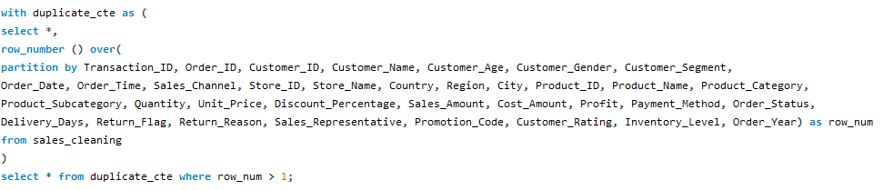
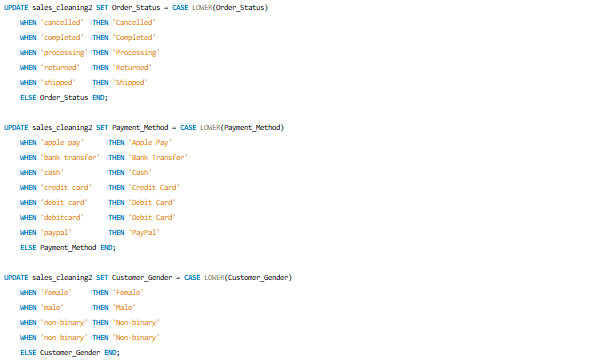
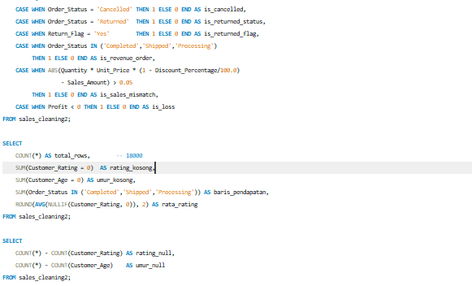
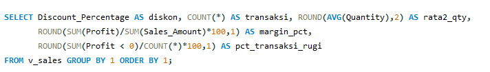

Analisis Penjualan
2022–2025
Membersihkan 18.000+ transaksi dengan SQL dan menyajikannya
dalam dashboard Power BI untuk melihat apa yang menggerakkan profit.

Ringkasan
Dataset berisi 18.045 baris transaksi penjualan dari enam negara dengan 35 kolom. Datanya belum siap dianalisis: ada duplikat, penulisan kategori yang berbeda-beda, nilai kosong, dan angka yang tidak masuk akal. Saya membersihkannya dengan MySQL, menganalisis polanya, lalu menampilkan hasilnya di dashboard Power BI.
| Peran | Data analyst (pembersihan, analisis, visualisasi) |
| Alat | MySQL, Power BI, DAX |
| Data | 18.045 baris mentah menjadi 18.000 baris bersih, periode 2022–2025 |
1. Membersihkan data dengan SQL
Data mentah tidak pernah saya ubah langsung. Saya bekerja di tabel salinan bertingkat
(sales2 → sales_cleaning → sales_cleaning2
→ sales_final), sehingga setiap perubahan bisa ditelusuri dan dibatalkan.
| Masalah | Sebelum | Perlakuan |
|---|---|---|
| Baris duplikat | 45 duplikat penuh | ROW_NUMBER() OVER (PARTITION BY ...), lalu hapus. Hasilnya 18.000 baris unik. |
| Kategori tidak konsisten | Gender 6 variasi, metode bayar 10, status order 8, region 14 | TRIM dan CASE untuk menyeragamkan. Hasilnya 4, 7, 5, dan 11 nilai. |
| Nilai kosong | Rating 3.435, umur 218, nama produk 144 | Nama produk diisi dari Product_ID. Gender dan metode bayar menjadi Unknown. Nilai 0 pada rating dan umur menjadi NULL. |
| Nilai tidak logis | 8 kuantitas ≤ 0, 4 umur di luar 16–90, 3 diskon di atas 30% | Dihitung ulang dari kolom yang saling terkait (sales, harga, diskon), atau diubah menjadi NULL. |
| Profit tidak cocok | Profit ≠ Sales − Cost | Dihitung ulang. |
| Sales tidak cocok dengan harga × kuantitas | 65 baris | Tidak dihapus, hanya diberi flag is_sales_mismatch. |

Diatas adalah data cleaning yang saya lakukan di sql

Diatas adalah standarisasi data yang saya lakukan di sql


Diatas adalah Kolom flag yang saya lakukan di sql
Dua keputusan yang saya anggap penting:
- Memberi flag, bukan menghapus. Baris yang meragukan tetap ada dan bisa disaring, jadi tidak ada informasi yang hilang diam-diam.
- Mendefinisikan pendapatan secara eksplisit. Kolom
is_revenue_orderhanya bernilai 1 untuk order berstatus Completed, Shipped, dan Processing. Order Cancelled dan Returned tidak ikut dihitung sebagai pendapatan.
2. Temuan analisis
Pendapatan dihitung dari 15.510 transaksi yang memenuhi definisi di atas: USD 7,13 juta dengan margin profit sekitar 20%.
Diskon adalah penentu utama margin
Margin hampir sama di semua tahun, channel, dan negara (sekitar 20%). Yang berbeda hanya ketika dipecah berdasarkan besar diskon:
| Diskon | Margin profit | Transaksi rugi |
|---|---|---|
| 0% | 25,1% | 0% |
| 5% | 20,9% | 0% |
| 10% | 16,8% | 0% |
| 15% | 11,8% | 0,6% |
| 20% | 6,2% | 10,5% |
| 29% | 0,6% | 28,7% |
| 30% | -7,0% | 85,7% |
Setiap tambahan diskon menggerus margin. Di atas 15%, sebagian transaksi mulai merugi. Kode promo juga tidak menghasilkan margin yang lebih baik daripada transaksi tanpa promo (sekitar 20% di keduanya).

Diatas adalah EDA yang saya lakukan di sql
Temuan lain
- Elektronik menyumbang sekitar 60% penjualan (USD 4,24 juta) dengan margin 19%. Appliances jauh lebih kecil, tetapi marginnya tertinggi (22%).
- Penjualan 2025 mencapai USD 2,00 juta, naik sekitar 21% dari 2024 (USD 1,64 juta).
- Retur terjadi pada 8,9% order dan pembatalan pada 5%. Alasan retur tersebar merata (keterlambatan, barang salah, rusak, cacat), sehingga tidak ada satu penyebab dominan.
3. Dashboard Power BI
Dashboard dibuat dari data hasil cleaning dan terdiri dari:
- Kartu KPI: total sales, total profit, margin profit, dan rating pelanggan.
- Grafik garis untuk tren sales dan profit dari waktu ke waktu.
- Grafik batang untuk sales dan profit per kategori produk dan per negara.
- Diagram lingkaran untuk komposisi channel penjualan.
Kolom flag dari tahap SQL dipakai langsung sebagai filter, sehingga definisi pendapatan di dashboard sama dengan di database.